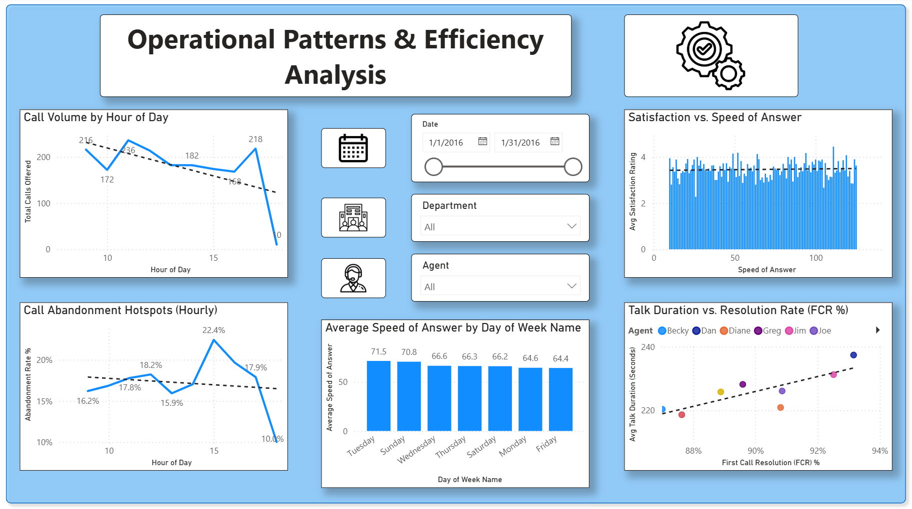
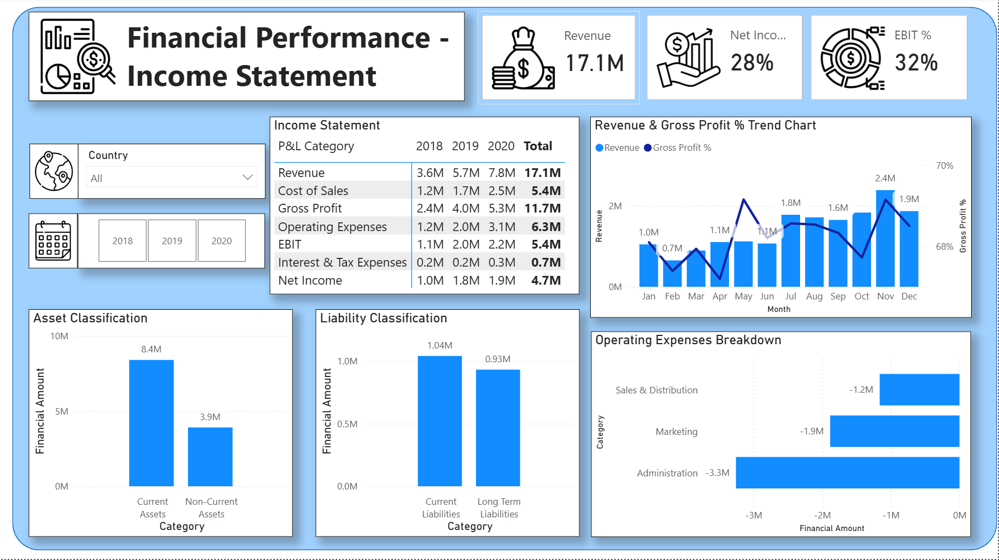
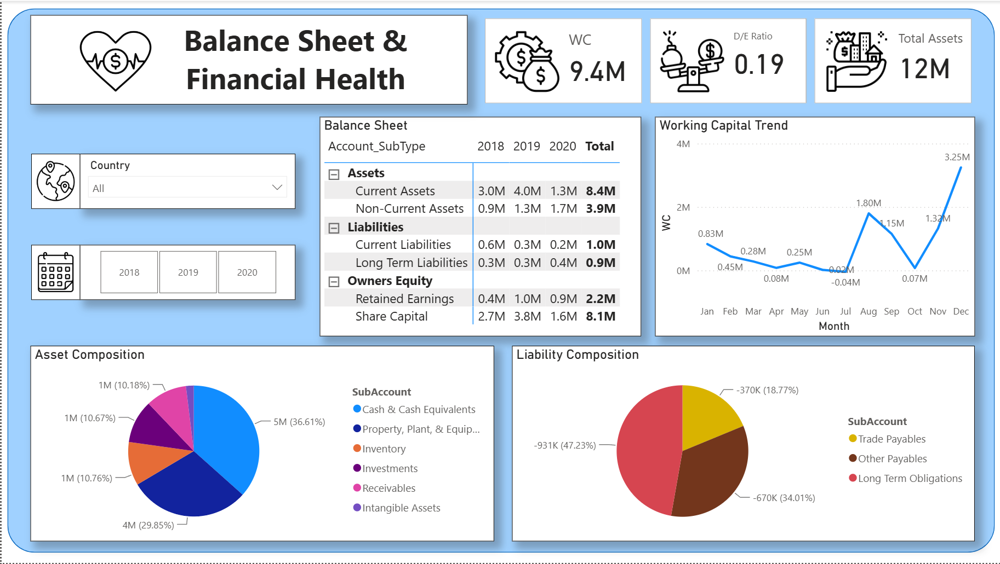

Featured Business Intelligence Projects (Froyo Technologies)


Call Center Operations & Performance Analytics Dashboard
- Business Objective: Designed a 2-page operational dashboard to analyze call handling efficiency, agent performance, and department workload across 1,770+ customer service interactions.
- Technical Execution: Used Power Query to clean transaction logs and write DAX measures for key operational metrics including Call Answer Rate (82.1%), First Call Resolution %, Average Speed of Answer (ASA), and Customer Satisfaction (CSAT).
- Key Features & Insights: Analyzed call volume hourly trends, abandonment hotspots, and agent performance scorecards across 5 product departments.


Enterprise Financial Reporting Suite (P&L, Balance Sheet, Cash Flow)
- Business Objective: Implemented a full enterprise financial reporting suite integrating General Ledger transactions, Chart of Accounts, Cash Flow statements, and Territory tables for corporate financial tracking.
- Technical Execution: Built a relational star schema connecting 27,900+ ledger entries with calendar and territory dimensions. Deployed custom DAX patterns to handle dynamic financial logic (Cost of Sales, Revenues, Operating Expenses, Equity changes).
- Business Impact: Presented analytical findings directly to senior management and company leadership, delivering clear visibility into territory profitability and YoY financial performance.
Additional Analytical Projects
Google Data Analytics Capstone Simulation
Applied the complete data analysis lifecycle (Ask, Prepare, Process, Analyze, Share, Act) on a bike-sharing dataset using SQL for data extraction and Tableau for creating interactive dashboards summarizing user duration patterns.
Academic Exploratory Data Analysis Project
Executed Exploratory Data Analysis (EDA) on marketing customer datasets using Python. Applied statistical methods to validate customer segmentation findings and visualize purchase frequency trends.
Technical Skills & Competencies
Business Intelligence & Analytics
Power BI (Advanced: DAX, Power Query, Data Modeling), Tableau, Microsoft Excel, Spreadsheets
Programming & Databases
Python (Pandas, NumPy, Matplotlib, Seaborn), SQL, R (Basic), Database Systems
Methods & Domain Focus
Data Analysis, ETL Workflows, Financial Reporting (P&L, Cash Flow), Exploratory Data Analysis (EDA), Statistical Reasoning, Business Modeling
Education
Bachelor of Business Administration (Financial & Marketing Analytics)
Cumulative GPA: 8.71 / 10.0
Relevant Coursework: Foundation in Business Analytics, Advanced Data Analytics with Python and Data Mining, Financial and Cost Accounting, Analytics for Marketing, Statistics and Research Methodology.
ICSE / ISC (Commerce & Mathematics Stream)
Gained a solid foundation in commerce, mathematics, quantitative reasoning, and financial principles.